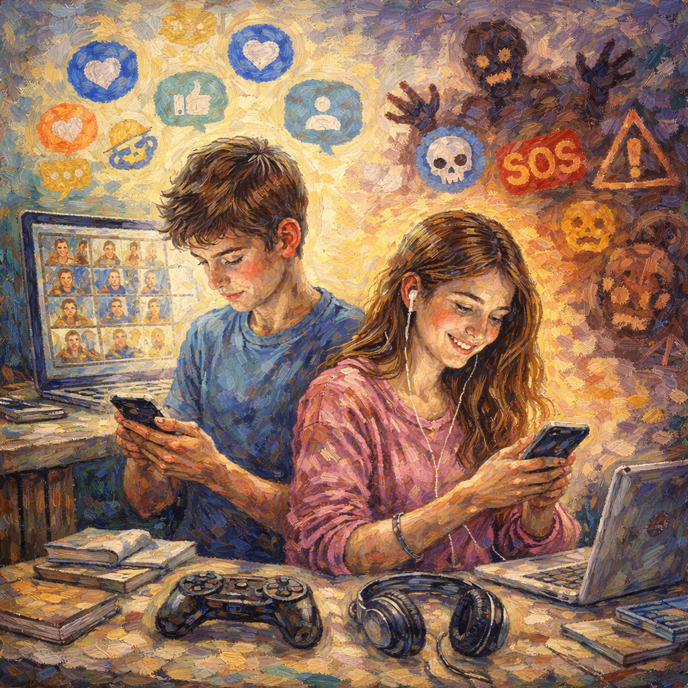

Χρήση της ψηφιακής τεχνολογίας από τους εφήβους: οφέλη, κίνδυνοι και τρόποι λειτουργικής οριοθέτησης
Κωνσταντίνα Παπαλεξοπούλου
Η ανάπτυξη της τεχνολογίας πληροφοριών, επικοινωνιών και δικτύων τις τελευταίες δεκαετίες, επηρεάζει σημαντικά όλους τους τομείς της ανθρώπινης δραστηριότητας και την κοινωνική αλληλεπίδραση. H πανδημία του Covid-19, οδήγησε σε σημαντική αύξηση της τεχνολογικής χρήσης ακόμη και σε βασικούς τομείς, όπως η επικοινωνία, η εργασία, η εκπαίδευση, αλλά και η υγειονομική περίθαλψη. Στο παρόν άρθρο, εξετάζονται, αρχικά, οι συνήθειες χρήσης της ψηφιακής τεχνολογίας και των μέσων κοινωνικής δικτύωσης (ΜΚΔ) από τους εφήβους, καθώς και τα οφέλη και οι πιθανοί κίνδυνοι που σχετίζονται με αυτήν. Έπειτα, διερευνώνται οι επιδράσεις της αυξημένης ή προβληματικής τεχνολογικής χρήσης στην σωματική και ψυχική ευεξία, την κοινωνικοποίηση, αλλά και την ακαδημαϊκή επίδοση. Τέλος, μέσα από την ανασκόπηση της επιστημονικής βιβλιογραφίας των τελευταίων ετών, προτείνονται τρόποι οριοθέτησης της χρήσης με σκοπό την ανάπτυξη υγιούς και λειτουργικής σχέσης με τα τεχνολογικά μέσα.
ΕΙΣΑΓΩΓΗ
Κατά τη διάρκεια της πανδημίας, η ψηφιοποίηση της εκπαιδευτικής διαδικασίας προκάλεσε αύξηση της τεχνολογικής χρήσης και για τα νεότερης ηλικίας άτομα, για λόγους που σχετίζονται όχι μόνο με την μαθησιακή διαδικασία αλλά και με την κοινωνικοποίηση (Kastorff et al., 2023; Voss et al., 2023). Τα παιδιά και οι έφηβοι, έρχονται καθημερινά σε επαφή με οθόνες, μέσω συσκευών όπως τα κινητά τηλέφωνα, οι υπολογιστές/tablet και τα ηλεκτρονικά παιχνίδια (gaming consoles). Οι προβληματισμοί που εγείρονται με αφορμή την αυξημένη χρήση των τεχνολογικών μέσων, αφορούν στις ανισότητες που σχετίζονται με την πρόσβαση, τις ψηφιακές δεξιότητες που απαιτούνται, αλλά και τις επιδράσεις στην ψυχική υγεία και ευεξία (Beaunoyer et al., 2020, Islam et al., 2022). Οι εξελίξεις που αφορούν στην ψηφιακή τεχνολογία και στα πολυμέσα δραστηριοτήτων που χρησιμοποιούνται πλέον καθημερινά, ανάδειξαν την ανάγκη διερεύνησης της συμπεριφοράς που σχετίζεται με την τεχνολογία («technology-related behavior»), αλλά και τις επιδράσεις της για τους χρήστες (Vargo et al., 2020).
Τα τελευταία χρόνια, η πρόσβαση των εφήβων στα «έξυπνα» κινητά τηλέφωνα (smartphones) είναι σχεδόν καθολική (95%), ενώ περίπου οι μισοί (45%) αναφέρουν πως είναι «συνεχώς συνδεδεμένοι», αναφορά που σχετίζεται με την χρήση των ΜΚΔ (Anderson & Jiang, 2018). Τα smartphones λειτουργούν ως μια «προέκταση του χεριού», καθιστώντας τους εφήβους «σύνθετους κυβερνο-οργανισμούς» (cyborgs) (Brailas & Tsekeris, 2014). Μάλιστα, λόγω της εξοικείωσής τους με τις εν λόγω συσκευές, οι έφηβοι των τελευταίων ετών έχουν χαρακτηριστεί ως η «γενιά των οθονών αφής» (Rosin, 2013). Στο πλαίσιο της διαρκώς μεταβαλλόμενης σύμπλοκης τεχνο-κοινωνικής πραγματικότητας, ιδιαίτερο ενδιαφέρον παρουσιάζει η μελέτη των συνηθειών χρήσης των τεχνολογικών συσκευών, όπως τα smartphones, και των ΜΚΔ από εφήβους και νεαρούς ενήλικες (Papalexopoulou & Psiachou, 2018).
ΣΥΝΗΘΕΙΕΣ ΧΡΗΣΗΣ ΤΗΣ ΤΕΧΝΟΛΟΓΙΑΣ ΑΠΟ ΤΟΥΣ ΕΦΗΒΟΥΣ: ΟΦΕΛΗ ΚΑΙ ΠΙΘΑΝΟΙ ΚΙΝΔΥΝΟΙ
Όπως αναφέρθηκε παραπάνω, οι έφηβοι χρησιμοποιούν την τεχνολογία για δραστηριότητες όπως η επικοινωνία, η συλλογή και η ανταλλαγή πληροφοριών, η ψυχαγωγία και η μελέτη (Voss et al., 2023). Οι ψηφιακές δεξιότητες που απαιτούνται αφορούν στην «λειτουργία και τη χρήση ψηφιακών μέσων, την αναζήτηση και την επεξεργασία πληροφοριών, την επικοινωνία και τη συνεργασία με την τεχνολογία, την παραγωγή περιεχομένου μέσων και τη χρήση της τεχνολογίας για σκοπούς που σχετίζονται με τη μελέτη» (Kastorff et al., 2023). Χαρακτηριστικά όπως η συχνότητα αλλά και οι λόγοι για τους οποίους χρησιμοποιείται η τεχνολογία από τους εφήβους, επηρεάζονται τόσο από κοινωνικοοικονομικούς παράγοντες, όσο και από παράγοντες όπως το φύλο και το μορφωτικό/εκπαιδευτικό επίπεδο των γονέων. Το κοινό, σε όλες τις περιπτώσεις, χαρακτηριστικό, είναι ότι τα τεχνολογικά μέσα χρησιμοποιούνται περισσότερο για προσωπικούς λόγους (όπως η επικοινωνία με τους φίλους και την οικογένεια) και λιγότερο για λόγους που σχετίζονται με την μελέτη.
Σύμφωνα με τους Bitto Urbanova και συνεργάτες, η τεχνολογία «αποτελεί έναν εναλλακτικό χώρο όπου οι έφηβοι μπορούν να αναπτυχθούν και να αντιμετωπίσουν διαφορετικές προκλήσεις της ζωής». Στην έρευνά τους, μέσα από συνεντεύξεις με εφήβους ηλικίας περίπου 15 ετών, διερεύνησαν τον τρόπο με τον οποίο αντιλαμβάνονται την τεχνολογία, καθώς και τον ρόλο που διαδραματίζει σε πέντε διαφορετικούς τομείς της ζωής τους: πηγή πληροφοριών (τυπική και μη τυπική εκπαίδευση), «έξυπνη συσκευή» (χρήσιμο εργαλείο), κοινωνικές αλληλεπιδράσεις, ελεύθερος χρόνος (δημιουργία του εναλλακτικού μου κόσμου) και αυτοανάπτυξη. Με βάση τα αποτελέσματα της έρευνας, διαπίστωσαν ότι οι έφηβοι αντιλαμβάνονταν την ψηφιακή τεχνολογία ως ένα υποστηρικτικό εργαλείο, ενώ είναι σε θέση να γνωρίζουν τις ευκαιρίες που σχετίζονται με τη χρήση της (Bitto Urbanova et al., 2023). Παρά τις θετικές αντιλήψεις των εφήβων για τις επιδράσεις της τεχνολογίας στην ζωή και την καθημερινότητά τους, η επιστημονική βιβλιογραφία και έρευνα εστιάζει, συχνά, στους κινδύνους που συνεπάγεται η χρήση της, όπως για παράδειγμα η πρόσβαση στο διαδίκτυο ή η χρήση τω ΜΚΔ.
Οι συνηθέστερα καταγεγραμμένοι κίνδυνοι αφορούν: ακατάλληλο περιεχόμενο (σεξουαλικό ή επιθετικό περιεχόμενο), διαδικτυακός εκφοβισμός (cyberbullying), διαδικτυακή παρενόχληση, κοινοποίηση προσωπικών πληροφοριών και κοινωνική απομόνωση (Lareki et al., 2017). Η χρήση της ψηφιακής τεχνολογίας, ειδικά σε εκτεταμένο βαθμό, μπορεί να έχει αρνητικό αντίκτυπο στην ψυχική και συναισθηματική ευεξία των εφήβων. Επιπροσθέτως, η αυξημένη χρήση της τεχνολογίας μπορεί να έχει αρνητικό αντίκτυπο στην σωματική και ψυχική υγεία των νεαρών ατόμων, καθώς και στην ακαδημαϊκή επίδοση (Zhang et al., 2024; Limone & Toto, 2021). Ως προς το φύλο, τα κορίτσια φαίνεται να επηρεάζονται περισσότερο αρνητικά σε ό,τι αφορά στην χρήση ΜΚΔ συγκριτικά με τα αγόρια, τα οποία εμφανίζουν κίνδυνο προβληματικής ενασχόλησης με τα βιντεοπαιχνίδια (Navarro-Martinez & Peña-Acuña, 2022). Επιπλέον, τα κορίτσια βρίσκονται σε περισσότερο ευάλωτη θέση κατά την χρήση του διαδικτύου, ενώ τα αγόρια φαίνεται να χρησιμοποιούν περισσότερο μηχανισμούς αποδέσμευσης (moral disengagement mechanisms) όταν βρίσκονται online. Ωστόσο, αν η ηθική αποδέσμευση λειτουργήσει διαμεσολαβητικά ανάμεσα στο φύλο και την ευαλωτότητα (vulnerability), τότε φαίνεται ότι τα αγόρια είναι πιο εκτεθειμένα, πιθανώς διότι επιδεικνύουν μη ηθικές (immoral) συμπεριφορές. Η ηλικία φαίνεται να συσχετίζεται, επίσης, θετικά με την ευαλωτότητα στο διαδίκτυο (Piccardi et al., 2023).
ΕΠΙΔΡΑΣΕΙΣ ΤΗΣ ΧΡΗΣΗΣ ΤΩΝ ΜΚΔ ΣΤΗΝ ΨΥΧΙΚΗ ΚΑΙ ΚΟΙΝΩΝΙΚΗ ΕΥΕΞΙΑ
Ο Boer και οι συνεργάτες του, βασίζονται στην διάκριση ανάμεσα στην έντονη χρήση (Instensity of Social Media Use) και στην προβληματική χρήση (Problematic Social Media Use) των ΜΚΔ. Η έντονη χρήση των ψηφιακών μέσων δεν είναι απαραίτητο ότι σχετίζεται με αρνητικά αποτελέσματα στην ψυχική υγεία και την κοινωνική ζωή των εφήβων. Αντίθετα, η προβληματική χρήση των μέσων κοινωνικής δικτύωσης έχει συσχετιστεί θετικά με λιγότερη ικανοποίηση από την ζωή, συχνότερα ψυχολογικά παράπονα, λιγότερη ικανοποίηση και υψηλότερη αντιλαμβανόμενη πίεση από το σχολείο, λιγότερη υποστήριξη από την οικογένεια και τους φίλους. Σε άλλη έρευνά τους, διερεύνησαν παράγοντες που ενδέχεται να λειτουργούν διαμεσολαβητικά στην σχέση της προβληματικής χρήσης των εν λόγω ψηφιακών μέσων με την ψυχική υγεία τον εφήβων. Τα αποτελέσματα της έρευνας ανέδειξαν την θετική συσχέτιση ανάμεσα στην προβληματική χρήση των ΜΚΔ με καταθλιπτικά συμπτώματα, «ανοδικές κοινωνικές συγκρίσεις» και θυματοποίηση στο διαδίκτυο (κυβερνοθυματοποίηση-cybervictimization) με την πάροδο του χρόνου (Boer et al., 2020; 2021).
Βασιζόμενοι στην εν λόγω διάκριση, οι Boniel-Nissim και συνεργάτες, διερεύνησαν την σχέση αναμεσά στο εύρος χρήσης και σε παράγοντες όπως η ψυχική και κοινωνική ευεξία (mental and social well-being), καθώς και η χρήση ουσιών. Το συμπέρασμα στο οποίο κατέληξαν είναι ότι η προβληματική χρήση, όπως και η μη-ενεργή χρήση συνδέονταν με χαμηλότερα αποτελέσματα ως προς την ψυχική και κοινωνική ευεξία, την χρήση ουσιών (προβληματική χρήση) και την ικανοποίηση από την ζωή (μη ενεργοί χρήστες των ΜΚΔ). Αντίστοιχα, τα ενδιάμεσα επίπεδα χρήσης των ΜΚΔ (ενεργή/έντονη αλλά μη προβληματική χρήση) από τους εφήβους, συνδέονται με θετικότερα αποτελέσματα για την ψυχική και σωματική ευεξία και την κοινωνικοποίηση (Boniel-Nissim et al., 2022).
Σύμφωνα με τον Παγκόσμιο Οργανισμό Υγείας, η προβληματική χρήση των ΜΚΔ συνίσταται στην παρουσία «ενός προτύπου συμπεριφοράς που χαρακτηρίζεται από συμπτώματα που μοιάζουν με εθισμό. Αυτά περιλαμβάνουν την αδυναμία ελέγχου της χρήσης των ΜΚΔ, την αίσθηση στέρησης όταν δεν τα χρησιμοποιεί το άτομο, την παραμέληση άλλων δραστηριοτήτων υπέρ των ΜΚΔ και την αντιμετώπιση αρνητικών συνεπειών στην καθημερινή ζωή λόγω υπερβολικής χρήσης» (WHO, 2024). Άλλες έρευνες, εστιάζουν στην σχέση ανάμεσα στην χρήση της τεχνολογίας και στην ψυχική υγεία στις περιπτώσεις παιδιών και εφήβων που αντιμετωπίζουν υψηλό κίνδυνο ψυχολογικής επιβάρυνσης (McBride, 2017). Η καθημερινή χρήση της ψηφιακής τεχνολογίας, κυρίως μέσω του κινητού τηλεφώνου και των δραστηριοτήτων που σχετίζονται με αυτό (π.χ. ανταλλαγή μηνυμάτων) ενδέχεται να συσχετίζεται με συμπτώματα -κατά την ίδια ημέρα (same day symptoms)- της διαταραχής ελλειμματικής προσοχής και υπερκινητικότητας (attention deficit hyperactivity disorder), καθώς και με την διαταραχή διαγωγής (conduct disorder), όπως η επιθετική συμπεριφορά και η απουσία συμμόρφωσης στους κανόνες (George et al., 2018).
ΤΕΧΝΟΛΟΓΙΚΗ ΧΡΗΣΗ ΚΑΙ ΑΚΑΔΗΜΑΪΚΗ ΕΠΙΔΟΣΗ
Στο σύγχρονο ψηφιακό περιβάλλον, τα τεχνολογικά μέσα και οι δυνατότητες που προσφέρουν, μπορούν να αξιοποιηθούν για σκοπούς που σχετίζονται με την εκπαίδευση. Η ψηφιακή τεχνολογία, επηρεάζει ποικιλοτρόπως τους ακαδημαϊκούς στόχους, ανάλογα με την χρήση της. Στους παράγοντες που μπορούν να επηρεάσουν την επίδοση των μαθητών, περιλαμβάνοντα η ηλικία έναρξης χρήσης του διαδικτύου, το φύλο, η ευκολία πλοήγησης σε ψηφιακές συσκευές και στο διαδίκτυο, το εύρος χρήσης εκτός του σχολικού περιβάλλοντος (επικοινωνία με συνομηλίκους), καθώς και η αντιλαμβανόμενη ψηφιακή ικανότητα και αυτονομία (digital competence and autonomy) εκ μέρους των νεαρής ηλικίας χρηστών (Navarro-Martinez & Peña-Acuña, 2022).
Ειδικότερα, η αυξημένη χρήση των ψηφιακών μέσων, καθώς και των ΜΚΔ μπορεί να οδηγήσει σε μειωμένα ακαδημαϊκά αποτελέσματα. Επιπλέον, η χρήση των ΜΚΔ με σκοπό το διαδικτυακό παιχνίδι συνδέεται με αρνητικά αποτελέσματα ως προς την μαθησιακή διαδικασία, συγκριτικά με την χρήση που σχετίζεται με την κοινωνική αλληλεπίδραση. Ο Jiang, μελέτησε την σχέση ανάμεσα στην συνδεσιμότητα στο διαδίκτυο, το ηλεκτρονικό παιχνίδι, συμπτώματα εξάρτησης από το διαδίκτυο και την ακαδημαϊκή επίδοση χρησιμοποιώντας τον Δείκτη Συνδεσιμότητας στο Διαδίκτυο (Internet Connectivity Index-ICI) (Jiang, 2014). Παρά τις θετικές επιδράσεις της τεχνολογίας όταν σχετίζεται με ακαδημαϊκούς σκοπούς, η αυξημένη χρήση του διαδικτύου μπορεί να αποσπάσει τους μαθητές από τις δραστηριότητες του σχολείου και να μειώσει σημαντικά τον χρόνο που δαπανάται για αυτές.
Εν συνεχεία, στην έρευνα που πραγματοποίησαν ο Ramírez και οι συνεργάτες του, διερεύνησαν μεταβλητές όπως ο χρόνος που δαπανάται στην χρήση της τεχνολογίας, η έκθεση σε εμπειρίες διαδικτυακού κινδύνου και η διαδικτυακή θυματοποίηση ως προς την συσχέτισή τους με την ακαδημαϊκή επίδοση αλλά και την ικανοποίηση από την ζωή. Οι παραπάνω μεταβλητές συσχετίστηκαν αρνητικά με την ακαδημαϊκή επίδοση, ενώ δεν βρέθηκε στατιστικά σημαντική συσχέτιση με την ικανοποίηση από την ζωή, με εξαίρεση την διαδικτυακή θυματοποίηση (αρνητική συσχέτιση). Το σημαντικό, κατά τους ίδιους, εύρημα ήταν ότι στην μειωμένη ακαδημαϊκή επίδοση που οφείλεται στην ευρεία χρήση τεχνολογικών συσκευών (παρακολούθηση τηλεόρασης, χρήση κινητού τηλεφώνου, διαδικτυακό παιχνίδι) λειτουργεί διαμεσολαβητικά η διαταραχή στις συνήθειες ύπνου (έλλειμα/στέρηση ύπνου). Η έρευνά τους κατέληξε στο συμπέρασμα ότι η χρήση ψηφιακών τεχνολογιών μπορεί να επηρεάσει αρνητικά την ευημερία των εφήβων, ενώ η μέτρια χρήση αυτών μπορεί να αποδειχθεί ωφέλιμη για την ευεξία τους (Ramírez et al., 2021).
Φαίνεται πως η επίδραση της ψηφιακής τεχνολογίας τόσο στην ψυχική ευεξία και την κοινωνική αλληλεπίδραση των εφήβων, όσο και στην ακαδημαϊκή επίτευξη, εξαρτάται από ποσοτικά και ποιοτικά χαρακτηριστικά της τεχνολογικής χρήσης. Συγκεκριμένα, σύμφωνα με την ψηφιακή υπόθεση «Goldilocks» («της Χρυσομαλλούσας»/digital Goldilocks hypothesis), ο κατάλληλος βαθμός χρήσης επιφέρει θετικά οφέλη για το άτομο, συγκριτικά με την υπερβολική ή καθόλου χρήση:
«Η «πολύ μικρή» χρήση της τεχνολογίας μπορεί να στερεί από τους νέους σημαντικές κοινωνικές πληροφορίες και δραστηριότητες με συνομηλίκους, ενώ η «υπερβολική» χρήση μπορεί να εκτοπίσει άλλες ουσιαστικές δραστηριότητες. Η υπόθεση Goldilocks αξιώνει ότι υπάρχουν εμπειρικά παραγόμενα σημεία ισορροπίας -μέτρια επίπεδα- που είναι «ακριβώς τα κατάλληλα» για τους βέλτιστα συνδεδεμένους νέους» (Przybylski & Weinstein, 2017).
ΤΡΟΠΟΙ ΛΕΙΤΟΥΡΓΙΚΗΣ ΟΡΙΟΘΕΤΗΣΗΣ ΤΗΣ ΧΡΗΣΗΣ ΤΗΣ ΨΗΦΙΑΚΗΣ ΤΕΧΝΟΛΟΓΙΑΣ
H περαιτέρω ανάπτυξη των νέων τεχνολογιών πληροφοριών και επικοινωνιών κατά τα τελευταία χρόνια, με τις εξελίξεις στην τεχνητή νοημοσύνη και τις συσκευές εικονικής πραγματικότητας (virtual reality), καθώς και την διευρυμένη χρήση των ΜΚΔ, αναδιαμορφώνει τις ανάγκες ανάπτυξης δεξιοτήτων και ψηφιακού γραμματισμού εκ μέρους των χρηστών. Οι νέοι του 21ου αιώνα, εξοικειώνονται με αυτό το περιβάλλον -κυριολεκτικά- από την γέννησή τους, γεγονός που έχει οδηγήσει στον χαρακτηρισμό τους ως digitods (για τα παιδιά που γεννήθηκαν μετά το 2008), διαχωρίζοντάς τους από όσους μεγάλωσαν στο μη ψηφιακό περιβάλλον των προηγούμενων δεκαετιών (Limone & Toto, 2022). Η ψηφιακή τεχνολογία αποτελεί το περιβάλλον μέσα στο οποίο οι έφηβοι μαθαίνουν, ανακαλύπτουν τον εαυτό τους και αλληλεπιδρούν με τους γύρω τους.
Η ψηφιακή τεχνολογία και οι δυνατότητες που προσφέρει στους νεαρούς χρήστες, αξιοποιούνται όλο και περισσότερο για σκοπούς που σχετίζονται με την εκπαίδευση. Ο όρος της ψηφιακής ικανότητας (digital competence) είναι ιδιαίτερα σημαντικός όσον αφορά τις δεξιότητες και την κατανόηση που απαιτείται από τους έφηβους μαθητές στην «κοινωνία της γνώσης» (Gallardo-Echenique et al., 2015). Βασιζόμενοι στην θεωρία χρήσεων και ικανοποίησης (Uses and Gratification Theory), ο Liu και οι συνεργάτες του, διερεύνησαν τον ρόλο του ψηφιακού γραμματισμού ανάμεσα στην χρήση των ΜΚΔ και στην ακαδημαϊκή επίδοση. Η χρησιμότητα της εν λόγω θεωρίας αφορά στην αναγνώριση τόσο των παραγόντων οι οποίοι λειτουργούν ως κίνητρα για την ενασχόληση με τις ψηφιακές πλατφόρμες (άντληση ικανοποίησης), όσο και των αποτελεσμάτων που επιφέρουν, με σκοπό την καλύτερη κατανόηση των συνηθειών χρήσης. Η έρευνα επικεντρώθηκε στις συνήθειες χρήσης φοιτητικού πληθυσμού ως προς μια συγκεκριμένη πλατφόρμα (TikTok) και στον αντίκτυπο στην ακαδημαϊκή επίδοση, λαμβάνοντας υπόψιν τον διαμεσολαβητικό ρόλο του ψηφιακού γραμματισμού (digital literacy), που ορίζεται ως η ικανότητα κριτικής αξιολόγησης και αποτελεσματικής χρήσης των ψηφιακών πλατφορμών. Στις μεταβλητές τις έρευνας περιλαμβάνονταν: η συχνότητα χρήσης, η δέσμευση των φοιτητών/τριών στην μαθησιακή διαδικασία, η αντιλαμβανόμενη χρησιμότητα των ψηφιακών μέσων, η δυνατότητα αυτό-έκφρασης μέσα από αυτά αλλά και η αποφυγή (escapism) του ακαδημαϊκού stress μέσα από την ενασχόληση με την πλατφόρμα. Όλες οι μεταβλητές (εκτός από την συχνότητα χρήσης) βρέθηκαν να συσχετίζονται σημαντικά με την ακαδημαϊκή επίδοση, αλλά και την συμπεριφορά της «απόδρασης».
Από τα ευρήματα προέκυψε ότι οι χρήστες αξιοποιούν την πλατφόρμα με σκοπό να «αποδράσουν» από το άγχος, καθώς και να εξερευνήσουν και να εκφράσουν διαφορετικές πτυχές της ταυτότητάς τους, οι οποίες μπορεί να μην είναι άμεσα ορατές στην ακαδημαϊκή ή κοινωνική τους ζωή. Συγκεκριμένα, ο στόχος αυτός επιτυγχάνεται μέσα από την δημιουργία περιεχομένου από τους χρήστες. Οι συγγραφείς καταλήγουν στο συμπέρασμα ότι «πτυχές όπως η αυτοπεποίθηση, η συμμετοχή των φοιτητών και η αντιληπτή συνάφεια συνδέονται θετικά με τη βελτίωση της ακαδημαϊκής επίδοσης» (Liu et al., 2025). Αντίστοιχα, η χρήση της τεχνολογίας έχει υποστηριχθεί, μέσα από πρόσφατες έρευνες, ότι μπορεί να συμβάλει στην ενίσχυση της εκπαιδευτικής διαδικασίας (Wekerle & Kollar, 2022), καθώς και στην βελτίωση της υγείας των εφήβων (Giovanelli et al., 2020).
Στο σύγχρονο ψηφιακό περιβάλλον, με σκοπό την ενίσχυση της ψυχικής υγείας των μαθητών, έχει διερευνηθεί η ενδεχόμενη θετική επίδραση συσκευών δυνητικής/εικονικής πραγματικότητας. Στην έρευνα της Hugh-Jones και των συνεργατών της (2025), δοκιμάστηκε μια πηγή εικονικής πραγματικότητας με δυνητικά περιβάλλοντα, τα οποία αποσκοπούσαν στον περιορισμό του άγχους που βιώνουν οι μαθητές μέσα από δεξιότητες συναισθηματικής αναγνώρισης και ρύθμισης. Για το σκοπό αυτό, αξιοποιήθηκαν τεχνικές που προάγουν την ενσυνειδητότητα (mindfulness), προσέγγιση η οποία θεωρείται αποτελεσματική στην αντιμετώπιση του άγχους:
«Εστιάζουμε στην εικονική πραγματικότητα (virtual reality), η οποία περιλαμβάνει τη χρήση τεχνολογίας υπολογιστών για τη δημιουργία ενός τρισδιάστατου προσομοιωμένου περιβάλλοντος που επιτρέπει στον χρήστη να βυθιστεί και να αλληλεπιδράσει με έναν εικονικό κόσμο μέσω της ακοής, της όρασης και της αφής. Τα περιβάλλοντα εικονικής πραγματικότητας παρέχονται μέσω ενός ελαφρού σετ μικροφώνου-ακουστικών που καλύπτει τα μάτια. Το εσωτερικό σετ μικροφώνου-ακουστικών εμφανίζει το προσομοιωμένο περιβάλλον 360 μοιρών με έναν καθηλωτικό τρόπο (δηλαδή, τίποτα άλλο εκτός του σετ μικροφώνου-ακουστικών δεν μπορεί να φανεί) και μπορεί να συνοδεύεται από ήχο».
Από την ανατροφοδότηση που έλαβαν από τους εκπαιδευτικούς των σχολείων τα οποία συμμετείχαν στην έρευνα, καθώς και από τους εφήβους μαθητές, η χρήση του συγκεκριμένου εργαλείου φαίνεται πως συνέβαλε στην συναισθηματική ρύθμιση των συμμετεχόντων, μέσα από τις τεχνικές ενσυνειδητότητας που αξιοποιήθηκαν. Μάλιστα, μαθητές οι οποίοι παρουσίαζαν σύνθετες ανάγκες ή αντιμετώπιζαν αυξημένες δυσκολίες (ως προς την συμπεριφορά, την διαπροσωπική αλληλεπίδραση ή την ικανότητα συγκέντρωσης), ενισχύονταν σημαντικά μετά την έκθεση στα δυνητικά περιβάλλοντα, τα οποία παρείχαν ένα ήρεμο, περιορισμένο σε ερεθίσματα πλαίσιο.
Σύμφωνα με τον Παγκόσμιο Οργανισμό Υγείας, στα οφέλη της υπεύθυνης χρήσης («συχνή αλλά μη προβληματική χρήση») των ΜΚΔ για τους νέους, συμπεριλαμβάνονται η ισχυρότερη υποστήριξη από συνομηλίκους και η κοινωνική διασύνδεση. Μερικές καλές πρακτικές που μπορούν να εφαρμόσουν τόσο οι γονείς όσο και οι εκπαιδευτικοί, είναι η υποστήριξη των νέων στην ανάπτυξη δεξιοτήτων ψηφιακού γραμματισμού, η προώθηση υγιών διαδικτυακών συμπεριφορών, η παροχή υποστήριξης σε όσους διατρέχουν κίνδυνο προβληματικής χρήσης, η ύπαρξη βελτιωμένων ψηφιακών περιβαλλόντων και η εκπαίδευση με στόχο την ενδυνάμωση των νέων να πλοηγούνται με ασφάλεια σε διαδικτυακούς χώρους (WHO, 2024).
ΣΥΜΠΕΡΑΣΜΑΤΑ
Η περίοδος της εφηβείας χαρακτηρίζεται από αναπτυξιακές αλλαγές, κατά την διάρκεια των οποίων το άτομο διαμορφώνεται ως προσωπικότητα σε μια διαδικασία προετοιμασίας για την ενηλικίωση. Οι Giovanelli και συνεργάτες, αποκαλούν αυτές τις αλλαγές «αναπτυξιακά παράθυρα ευκαιριών», κατά τα οποία οι έφηβοι βρίσκουν ορισμένα τεχνολογικά μέσα ιδιαίτερα ελκυστικά ή συναρπαστικά στο πλαίσιο της εξερεύνησης και της κοινωνικής αλληλεπίδρασης. Δεδομένου ότι η εφηβική ηλικία χαρακτηρίζεται από αναπτυξιακή πλαστικότητα, ο ψηφιακός κόσμος αποτελεί ένα σημαντικό πλαίσιο για την παροχή παρεμβάσεων, καθώς και έναν απαραίτητο χώρο για την προώθηση προσαρμοστικών συμπεριφορών. Στο άρθρο τους, αναδεικνύεται η ανάγκη λήψης προληπτικών μέτρων, όπως η διδασκαλία της υγιούς συμμετοχής στην επεξεργασία πληροφοριών, της αυτορρύθμισης και του τεχνολογικού γραμματισμού κατά τη διάρκεια των εφηβικών «παραθύρων ευκαιρίας», μέσα από την συνεργασία ειδικών από τα σχετικά επιστημονικά πεδία (developmental science perspective), όπως οι αναπτυξιακές επιστήμες, καθώς και οι επιστήμες υγείας και υπολογιστών (Giovanelli et al., 2020).
Εν κατακλείδι, είναι γεγονός ότι η συζήτηση γύρω από την ανάπτυξη της ψηφιακής τεχνολογίας και τις επιδράσεις της στην ανθρώπινη ζωή και καθημερινότητα διευρύνεται συνεχώς, αναδεικνύοντας πιθανούς κινδύνους και αναζητώντας αποτελεσματικούς τρόπους για την αντιμετώπισή τους. Το παρόν άρθρο, επιχείρησε να «φωτίσει» ορισμένες πλευρές του ζητήματος της αλληλεπίδρασης των εφήβων με την τεχνολογία και τις δυνατότητες που προσφέρει σε τομείς όπως η εκπαίδευση, η επικοινωνία, αλλά και η αυτό-ανάπτυξη. Οι επιδράσεις της χρήσης των συσκευών τεχνολογίας, όπως τα κινητά τηλέφωνα και οι κονσόλες παιχνιδιών, και των δραστηριοτήτων που προσφέρονται (πρόσβαση στο διαδίκτυο, ΜΚΔ) επηρεάζονται σημαντικά από παράγοντες όπως η συχνότητα και ο σκοπός για τον οποίο αξιοποιούνται. Δεδομένου ότι η «ψηφιακή εποχή», αποτελεί το πλαίσιο της δραστηριότητας των σημερινών εφήβων, καθώς και όσων ακολουθούν, αναδεικνύεται η ανάγκη διαμόρφωσης ενός ασφαλούς περιβάλλοντος που θα βασίζεται στην εκπαίδευση όλων των εμπλεκόμενων μερών, με σκοπό την απόκτηση υγιούς σχέσης με τα τεχνολογικά μέσα.
Βιβλιογραφία
Anderson, M., & Jiang, J., 2018. Teens, social media & technology 2018. Pew research center, 31, 1673-1689.
Beaunoyer, E., Dupéré, S., & Guitton, M., J., 2020. COVID-19 and digital inequalities: Reciprocal impacts and mitigation strategies. Computers in human behavior, 111, 106424. https://doi.org/10.1016/j.chb.2020.106424
Bitto Urbanova, L., Madarasova Geckova, A., Dankulincova Veselska, Z., Capikova, S., Holubcikova, J., van Dijk, J. P., & Reijneveld, S. A. (2023). Technology supports me: Perceptions of the benefits of digital technology in adolescents. Frontiers in psychology, 13, 970395. https://doi.org/10.3389/fpsyg.2022.970395
Boer, M., Stevens, G. W., Finkenauer, C., de Looze, M. E., & van den Eijnden, R. J., 2021. Social media use intensity, social media use problems, and mental health among adolescents: Investigating directionality and mediating processes. Computers in Human Behavior, 116, 106645. https://doi.org/10.1016/j.chb.2020.106645
Boer, M., Van Den Eijnden, R., J., Boniel-Nissim, M., Wong, S., L., Inchley, J. C., Badura, et al., 2020. Adolescents' intense and problematic social media use and their well-being in 29 countries. Journal of adolescent health, 66(6), S89-S99. https://doi.org/10.1016/j.jadohealth.2020.02.014
Boniel-Nissim, M., van den Eijnden, R., J., Furstova, J., Marino, C., Lahti, H., Inchley, J., et al., 2022. International perspectives on social media use among adolescents: Implications for mental and social well-being and substance use. Computers in Human Behavior 129, 107144. https://doi.org/10.1016/j.chb.2021.107144
Brailas, A., & Tsekeris, C., 2014. Social behaviour in the internet era: Cyborgs, adolescents and education. European Journal of Social Behaviour, 1(1), 1-4.
Gallardo-Echenique, E. E., de Oliveira, J. M., Marqués-Molias, L., Esteve-Mon, F., Wang, Y., & Baker, R., 2015. Digital competence in the knowledge society. MERLOT Journal of Online Learning and Teaching 11(1).
George, M. J., Russell, M. A., Piontak, J. R., & Odgers, C. L., 2018. Concurrent and subsequent associations between daily digital technology use and high-risk adolescents’ mental health symptoms. Child development, 89(1), 78-88. 10.1111/cdev.12819
Giovanelli, A., Ozer, E. M., & Dahl, R. E., 2020. Leveraging technology to improve health in adolescence: A developmental science perspective. Journal of Adolescent Health, 67(2), S7-S13. https://doi.org/10.1016/j.jadohealth.2020.02.020
Hugh-Jones, S., Ulor, M., Nugent, T., Walshe, S., & Kirk, M., 2023. The potential of virtual reality to support adolescent mental well-being in schools: A UK co-design and proof-of-concept study. Mental Health & Prevention 30, 200265. https://doi.org/10.1016/j.mhp.2023.200265
Jiang Q., 2014. Internet addiction among young people in China: Internet connectedness, online gaming, and academic performance decrement. Internet Research, 24(1), 2-20. https://doi.org/10.1108/IntR-01-2013-0004
Kastorff, T., Sailer, M., & Stegmann, K., 2023. A typology of adolescents’ technology use before and during the COVID-19 pandemic: A latent profile analysis. International Journal of Educational Research 117, 102136. https://doi.org/10.1016/j.ijer.2023.102136
Lareki, A., de Morentin, J., I., M., Altuna, J., & Amenabar, N., 2017. Teenagers' perception of risk behaviors regarding digital technologies. Computers in Human Behavior, 68, 395-402. https://dx.doi.org/10.1016/j.chb.2016.12.004
Limone, P., & Toto, G., A., 2021. Psychological and emotional effects of digital technology on children in COVID-19 pandemic. Brain sciences, 11(9), 1126. https://doi.org/10.3390/brainsci11091126
Limone, P., & Toto, G., A., 2022. Psychological and emotional effects of digital technology on digitods (14–18 years): A systematic review. Frontiers in Psychology, 13 938965. https://doi.org/10.3389/fpsyg.2022.938965
Liu, J., Adnan, H., M., & Aziz, N., I., B., 2025. The Role of Digital Literacy in Mitigating the Effects of Social Media Usage on Academic Performance: A Study of TikTok Users in Higher Education Institutions in China. Studies in Media and Communication, 14(1). 10.11114/smc.v14i1.7971
McBride, D., L., 2017. Daily digital technology use linked to mental health symptoms for high-risk adolescents. Journal of Pediatric Nursing: Nursing Care of Children and Families 36, 254-255. https://dx.doi.org/10.1016/j.pedn.2017.06.003
Papalexopoulou, K., & Psiachou, K., 2018. Smartphones and their use by teenagers and young adults-differences and similarities: A case study. Homo Virtualis, 1(1), 53-68. https://doi.org/10.12681/homvir.19071
Piccardi, L., Burrai, J., Palmiero, M., Quaglieri, A., Lausi, G., Cordellieri, et al., 2023. A cross-sectional study of gender role adherence, moral disengagement mechanisms and online vulnerability in adolescents. Heliyon, 9(8). https://doi.org/10.1016/j.heliyon.2023.e18910
Przybylski, A., K., & Weinstein, N., 2017. A large-scale test of the goldilocks hypothesis: quantifying the relations between digital-screen use and the mental well-being of adolescents. Psychological science 28(2), 204-215. https://doi.org/10.1177/0956797616678438
Ramírez, S., Gana, S., Garcés, S., Zúñiga, T., Araya, R., & Gaete, J., 2021. Use of technology and its association with academic performance and life satisfaction among children and adolescents. Frontiers in psychiatry 12, 764054.
Vargo, D., Zhu, L., Benwell, B., & Yan, Z., 2021. Digital technology use during COVID‐19 pandemic: A rapid review. Human Behavior and Emerging Technologies 3(1), 13-24. 10.1002/hbe2.242
Voss, C., Shorter, P., Mueller-Coyne, J., & Turner, K., 2023. Screen time, phone usage, and social media usage: Before and during the COVID-19 pandemic. Digital health 9, 20552076231171510. 10.1177/20552076231171510
Wekerle, C., & Kollar, I., 2022. Using technology to promote student learning? An analysis of pre-and in-service teachers’ lesson plans. Technology, Pedagogy and Education 31(5), 597-614. https://doi.org/10.1080/1475939X.2022.2083669
World Health Organization (WHO), 2024. Teens, screens and mental health. Ανακτήθηκε από: https://www.who.int/europe/news/item/25-09-2024-teens--screens-and-mental-health
Zhang, R., Jiang, Q., Cheng, M., & Rhim, Y., T., 2024. The effect of smartphone addiction on adolescent health: the moderating effect of leisure physical activities. Psicologia: Reflexão e Crítica, 37(1), 23. https://doi.org/10.1186/s41155-024-00308-z